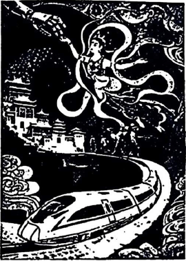

真题 · 语言文字运用
情境表达与图文仿写
2026年高考天津卷第六部分。
导读
原卷第21题的两个写作任务任选其一，共6分。第22题为图文仿写，共4分。
班会题用到《杜鹃不语》，座谈会题用到《万木草堂小学学记》。以下作答均为研读示例。
第1题 · 班会开场白
从以下两题中任选一题作答。要求：只写正文，100字左右。（6分）
（1）班级拟召开“生态优先，绿色发展”主题班会，请你结合《杜鹃不语》一文，为主持人设计一个开场白。
参考答案1展开 / 收起
参考作答
今天的班会，我们从瓦屋山的一朵杜鹃说起。《杜鹃不语》写到，云杉给飞鸟安家，飞鸟把花籽带上枝头。守护一朵花，就要守护它赖以生长的家园。围绕“生态优先，绿色发展”，请大家想想，如果校园增设活动场地，怎样给花草和鸟儿留出空间？
审题与考查点
开场白要让听众知道班会谈什么、从哪里谈起。题目指定了主题和阅读材料，还要求用主持人的口吻自然引出接下来的班会活动。
文本分析
从生灵相依说到保护栖息地查看证据 ↗
从飞鸟把花籽带上树丫的情节出发，可以说清山林怎样容纳彼此依存的生命。保护花、鸟与树共同栖居的环境，是原文细节与班会主题之间的联系。
把主题交给全班讨论查看证据 ↗
开场白可用“今天的班会”建立现场感，继而用一个校园里的问题转入讨论。新设活动场地与保留生境如何兼顾，让同学们能在具体处境中讨论绿色发展。
知识点
微写作中的开场白是活动的起点。一个贴近听众的问题，既能点明议题，也能把发言机会交给参加活动的人。
解题方法
先在原文中选一个能说明生灵相依的细节，再说清这个细节为什么引出保护生态的议题，最后把议题化成同学们可以讨论的问题。
易误辨析
如果把杜鹃花海的颜色、规模逐项复述，听众仍不知道班会要讨论什么。选取花、树、鸟之间的联系，才能顺着原文提出保护栖息地的问题。
答案组织与检核
读一遍开场白，检查听众能否听清主题和讨论问题。按原卷要求只写正文，篇幅约100字。
第2题 · 座谈会发言
（2）学校举行“五育并举”师生座谈会，你作为学生代表参加。请结合梁启超《万木草堂小学学记》中提出的读书观和健康观，写一篇发言稿。
本题与第1题同属原卷第21题，遵照两题共同的作答要求任选一题作答。
参考答案2展开 / 收起
参考作答
在“五育并举”的座谈会上，我想谈谈怎样把读书与体育锻炼安排好。梁启超主张读书抓住要义、学以致用，也提倡劳逸结合、坚持锻炼。我建议同学们记下读书中的疑问，尝试用所学解决校园里的问题，也希望学校为每天的体育活动留足时间。
审题与考查点
题目指定了学生代表的身份、师生座谈的场合和两项内容。发言应讲清梁启超的读书观、健康观，并把它们落实到学校生活。
文本分析
用“专求致用”组织读书建议查看证据 ↗
梁启超论读书，提出“标举大义，专求致用”，并主张记下心得和疑难。“记下疑问”与“解决校园里的问题”分别落实了札记与致用。
用劳逸相济组织健康建议查看证据 ↗
论健康一段既说“学贵以时，无使劳顿”，也说“更习体操，以练筋肤”。把两层意思说清，再说明为何要给每天的体育活动留出时间。
以学生代表身份提出建议查看证据 ↗
面向师生座谈，发言可以同时涉及学生能做的事和学校能提供的条件，例如主动运用所学、保证体育活动时间。用“我建议”“我希望”表达，语气与座谈场合相称。
知识点
微写作中的座谈发言面向在场听众，一般要提出自己的看法，并就会上可以讨论的事情给出具体建议。
解题方法
各取一句文言作支点，把原意改写成适合当场说出口的短句。接着分别给出学习和体育活动的建议，让它们都能回扣原文。
易误辨析
“读书重要，运动也重要”只说出话题。“专求致用”要求把学到的知识用起来，“学贵以时”还涉及学习和休息的安排。
答案组织与检核
检查两项观点是否都讲清楚，建议是否具体，语气是否符合学生代表面向师生交流的场合。按原卷要求只写正文，篇幅约100字。
第3题 · 看图仿写
依据下图寓意，仿照第一句，补写第二句，使三句话成为有机整体。（4分）

①曾经，千年的驿路，悠扬的驼铃，穿越滚滚黄沙，将古老的东方瑰宝展示于四方；
②＿＿＿＿＿＿＿＿＿＿＿＿＿＿＿＿＿＿＿＿；
③历史的车辙，终融入新时代的华章！
参考答案3展开 / 收起
参考作答
如今，绵延的铁轨，飞驰的列车，驶过茫茫戈壁，将焕发新彩的敦煌艺术传向世界
审题与考查点
三项要求同时成立。补句要有画面依据，形式与第①句相称，意思还要承上启下，让第③句能够总结古今的联系。
文本分析
在画面中找到古今两组形象查看证据 ↗
图2把飞天、楼阁和驼队与机械手、现代列车画在一处。示例取列车和铁轨承接首句的驼铃和驿路，以交通方式的变化写出古今联系。
沿用首句的语序和节奏查看证据 ↗
第①句先交代时间，再并列两组景物，继而写穿越的动作和传播的结果。示例用“如今”承接“曾经”，用“驶过茫茫戈壁”对应“穿越滚滚黄沙”，再以“将”字结构交代所传播的文化及其去向。
使末句可以总括前两句查看证据 ↗
首句写古时丝路传播东方文化，补句转写当代技术助力敦煌艺术传播，两句同说文化如何走向外界。这样，“历史的车辙”兼承驿路与铁轨，第三句便能收束古今。
知识点
语篇衔接体现为时间次序、同一话题的延续和前后句的照应。本题也要求仿写的句式与给定句保持对应。
解题方法
先用时间词定下“现在”，再从图中选取相配的当代景物。依次写出现代交通与敦煌艺术的联系，最后把三句连读。
易误辨析
只写列车速度快、技术先进，会留下一个语义缺口。末句说的是历史融入新时代，补句要交代当代事物怎样承接敦煌文化。
答案组织与检核
依次核对时间词、两组景物、动作和“将”字结构。把补句填回横线时，沿用题面已给出的分号。
本文关联
杜鹃不语2 处
阅读条目 →导读 ↗班会题用到《杜鹃不语》，座谈会题用到《万木草堂小学学记》。以下作答均为研读示例。
从生灵相依说到保护栖息地 ↗从飞鸟把花籽带上树丫的情节出发，可以说清山林怎样容纳彼此依存的生命。保护花、鸟与树共同栖居的环境，是原文细节与班会主题之间的联系。
万木草堂小学学记3 处
阅读条目 →导读 ↗班会题用到《杜鹃不语》，座谈会题用到《万木草堂小学学记》。以下作答均为研读示例。
用“专求致用”组织读书建议 ↗梁启超论读书，提出“标举大义，专求致用”，并主张记下心得和疑难。“记下疑问”与“解决校园里的问题”分别落实了札记与致用。
用劳逸相济组织健康建议 ↗论健康一段既说“学贵以时，无使劳顿”，也说“更习体操，以练筋肤”。把两层意思说清，再说明为何要给每天的体育活动留出时间。